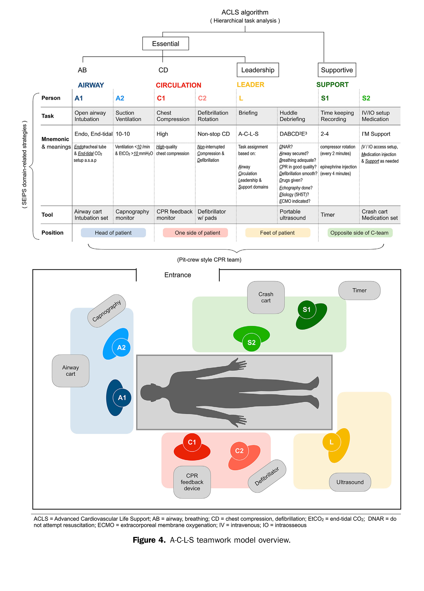

OHCA · 到院前心跳停止
院外心跳停止的
復甦與實證
從台灣與新北的流行病學數據，到高效能團隊復甦，再到 2025 最新實證更新 — 給新北急診住院醫師的一堂課。
01流行病學 Epidemiology
02團隊復甦 Teamwork
03實證更新 EBM 2025
警語💀本簡報含黑色幽默，劑量與你的累積值班時數成正比。笑不出來，代表你該休假了。
Agenda
今天的三個重點
為什麼一位急診住院醫師該在意 OHCA — 因為它是我們能真正改變預後的少數場景之一
📊
1 · 流行病學
台灣與新北的發生率、存活率趨勢，以及新北如何成為六都之冠的關鍵作為。
🤝
2 · 團隊復甦
High-performance CPR、Pit-crew 分工、閉環溝通與可量化的品質指標（含 F1 影片比喻）。
🔬
3 · 實證更新
2025 AHA、COCA(鈣)、碳酸氫鈉證據等級、DOSE VF(DSED)、呼吸器六轉盤策略。
黑色幽默⚰️OHCA 是少數你能合法把「到院前死亡」改寫成「康復出院」的場景——順便還能寫進科部 KPI。
01
流行病學
台灣 · 新北 — 我們每天面對的數字有多大，改善的空間又在哪裡
黑色幽默💀流行病學，就是把一場又一場悲劇，優雅地壓縮成小數點後兩位的藝術。
Taiwan 全國
台灣 OHCA 的規模
全國人口為基礎之研究 — 發生率高、整體存活率仍偏低，且城鄉差距明顯
~50–84
每 10 萬人年
估計 OHCA 發生率
臨床意義：每年數以萬計的病人在到院前倒下，但預後高度取決於 旁觀者 CPR、早期去顫、與到院後照護的整合 — 這正是「生存之鏈」每個環節可以介入的地方。
資料來源：台灣全國人口研究（PLOS ONE 2015；Resuscitation 2023 更新趨勢）。發生率隨統計年代與定義而異。
黑色幽默💀在台灣，OHCA 的發生率比一個 PGY 想離職的念頭還要穩定成長。
全國趨勢 · 政策見效
政策，真的能救命
2012–2015 全國資料：一連串「生存之鏈」政策上路後，旁觀者 CPR 與存活率同步上升（皆 p<0.001）
▬ 旁觀者 CPR 比率
┈ 純壓胸 CPR 比率
╌ 存活出院比率
▬ 存活且可生活自理 (CPC 1–2)
政策 ① 推動純壓胸 CPR ② 119 派遣員指導 CPR ③ 公眾電擊器法／好薩瑪利亞人法
資料來源：林皓陽等，Abstract 19190, Circulation 2018;134:A19190（NTUH 急診）。* 四項趨勢皆 p<0.001（chi-squared for trend）。
黑色幽默📜救活一個 OHCA，有時靠的不是你的手，而是三年前立法院通過的一條法案。
新北市
新北：六都之冠
康復出院率為全國平均近兩倍 — 這不是運氣，是系統性投資的結果
11.45%
新北 OHCA
康復出院率 (2024)
3.1 → 11.45
自 99 年以來
康復出院率成長 (%)
新北為何能領先？ 三大系統性作為：
① 廣佈高級救護技術員 (EMTP)、
② 線上即時醫療指導／遠距醫療、
③ 提高到院前急救藥物施打率。內科 OHCA 有 EMTP 出勤者，給藥率可達 6 成以上。
資料來源：新北市政府消防局；中央社 2024/09 報導。「康復出院率」＝存活且神經功能良好出院。
黑色幽默🏙️住新北的隱藏福利：學區、捷運，以及——比較高的機率被救回來。
Chain of Survival
生存之鏈：住院醫師的位置
前三環在院前完成 — 我們接手的是第 4、5 環，但成敗早在救護車上就開始累積
📞① 早期辨識與求救
旁觀者辨識、119 派遣員指導 CPR (T-CPR)。
💪② 旁觀者 CPR
提高比例是新北改善的核心之一。
⚡③ 早期去顫 (PAD)
公共 AED 佈建與可及性。
🏥④ 高級復甦
← 這裡開始是我們：EMTP 給藥、氣道、到院後 ACLS。
❤️🩹⑤ ROSC 後整合照護
溫控、冠脈介入、神經預後 — 決定「康復出院」。
環環相扣：任何一環延遲，後面再努力都在追趕。存活是團隊接力，不是個人英雄。
黑色幽默😴生存之鏈最脆弱的一環，通常是凌晨三點還沒睡醒、接起電話的那一環。
02
團隊復甦
Resuscitation Teamwork — 好的 CPR 是一種「可被量測、可被訓練」的團隊表現
預告🏎️接下來四支影片，是你的隊友——只是他們開的是 F1，而且換胎比你插 IV 快得多。
Pit-Crew Model
固定角色、固定站位
像 F1 維修站：每個人在病人到達前就知道自己站哪、做什麼 — 減少混亂與空窗
👑團隊領導 Team Leader
綜觀全局、不動手；下指令、追時間、做決策、宣布可逆病因 (H&T)。
💪按壓者 ×2
每 2 分鐘輪替，避免疲勞使深度/回彈變差；輪替在節律判讀時完成。
🫁氣道 Airway
BVM／進階氣道、監測 waveform capnography。
💉給藥／血路 IV/IO
建立 IO/IV、依指令給 adrenaline、抽血、備藥。
⚡去顫 Defib
貼片、充電、判讀節律、安全放電；預先充電縮短 pause。
📝紀錄／計時 Recorder
記錄時間軸，每 2 分鐘提醒節律檢查與 adrenaline 週期。
領導者的鐵律：站後一步、雙手空著、聲音清楚。當領導者也在按壓時，就沒有人在「看整場」。
黑色幽默🏎️F1 兩秒換完四條輪胎；我們插一條 IV 要五分鐘，還嫌病人的血管太滑。
▶ 比喻 · F1 Pit Stop 進化
越練，越快
1990 vs 2023：同樣是換四條輪胎，三十年的刻意練習把它從十幾秒壓到 2 秒
復甦是可以「練出來」的
沒有人天生 2 秒換胎，也沒有人天生會壓出完美 CPR。差別只在有沒有固定分工、反覆演練、賽後檢討。
- 定期 mock code 與情境演練
- 每次 code 後 debrief：哪裡卡住、pause 為何變長
- 把流程肌肉記憶化，臨場才不用「想」
黑色幽默🔧你現在手忙腳亂的樣子，就是 1990 那組維修員——好消息是，他們後來變成 2023 那組。
Communication
閉環溝通
指令 → 覆誦 → 執行 → 回報。四步驟缺一，藥就可能沒給或給兩次。
- 指名下令：「小李，給 1 毫克 adrenaline IV」— 不要對空氣講話。
- 覆誦確認：「收到，1 毫克 adrenaline IV。」
- 執行回報：「adrenaline 已給，時間 08:14。」
- 領導收束：確認並記錄，設定下一次週期。
研究一致顯示：明確角色＋閉環溝通可縮短 hands-off time、減少用藥錯誤。
溝通的三個殺手
- 對整個房間喊話，沒有人負責
- 多人同時下指令，彼此矛盾
- 只說結果不報時間 → 週期亂掉
心理安全 (Psychological safety)：任何一位成員發現漏做壓胸、節律看錯、藥給錯，都應該能立即說出來，領導者要歡迎它。
黑色幽默🔇「有人推 adrenaline 了嗎？」——十分鐘後才發現：沒有。這種沉默，是全場最貴的。
▶ 比喻 · 各做各的
強者的集合 ≠ 強隊
每個成員都很強、都在忙自己的事，看到問題卻沒有人開口 — 這不是團隊，是一群人剛好在同一個房間
「我以為別人會講」
最危險的 code，不是沒人會做事，而是每個人都看到警訊、每個人都以為別人會處理。
- 看到 pause 太久 / 深度不夠 / 藥漏了 → 當下就要說
- 領導者要主動問：「還有什麼我沒看到的？」
- 菜鳥的一句提醒，可能比主治的沉默更救命
黑色幽默🙊「我看到了，但我想說學長應該也看到了」——這句心裡話，寫過的死亡病摘比你想的多。
▶ 比喻 · 弄巧成拙
沒有默契，反而更糟
團隊不同步時，動作越多、越用力，結果不是救到人，而是連自己的車都燒起來
忙亂 ≠ 有效
六個人同時衝上去、各喊各的指令、沒人管時間——CPR 品質不會變好，只會中斷更久、錯誤更多。
- 寧可慢一秒對齊，不要快三秒撞在一起
- 領導者要能喊「停、我們重來」
- 混亂本身就是一種可逆病因——把它處理掉
黑色幽默🔥團隊不同步最慘的下場：不是沒把人救回來，是急救到一半、連自己都著火了。
High-Performance CPR
把「品質」變成數字
你無法改善你沒有量測的東西 — 用回饋裝置與 capnography 即時修正
Waveform Capnography 是隊友
確認氣管內管位置、即時反映按壓品質；ETCO₂ 持續 <10 提示按壓不足或預後差。 突然躍升到 35–40 mmHg → 強烈提示 ROSC，不必停下來檢查脈搏。
把中斷降到最低
節律判讀前先預先充電、輪替壓胸在充電時完成、放電後立即恢復按壓不看脈搏。每一次不必要的 pause 都在讓冠脈灌流壓歸零。
黑色幽默📈ETCO₂ 是急救現場唯一不會對你說謊的隊友——它不給你面子，但它從不騙你。
▶ 比喻 · 資源有限
領導者：把有限資源用到極致
沒有滿編人力、沒有 ECMO、器材還缺一半 — 這時候領導者的價值，是「用手上這幾根火柴把火升起來」
資源有限，決策更重要
深夜小夜、只有你和兩個護理師時，領導者要做的不是抱怨缺人，而是分配、取捨、排優先順序。
- 先指派最關鍵的兩件事：壓胸不停、盡快去顫
- 其餘任務依人力排序，別想同時做十件
- 及早呼叫支援：知道自己資源上限，也是能力
黑色幽默🕯️「資源不夠」不是不作為的藉口——領導者的工作，就是用剩下這幾根火柴，把火升起來。
本土實證 · NTUH · Ann Emerg Med 2025
A-C-L-S 團隊模型
台大醫院急診用「人因工程」把 OHCA 復甦團隊結構化 — 一個台灣本土、而且有數據撐腰的框架
核心原則
1 人 · 1 任務 · 1 工具 · 1 站位 · 1 口訣
每個人只負責一件事、站固定位置、用固定工具、記一句口訣 → 降低認知負荷 (cognitive load)，臨場不用「想」。
怎麼設計出來的
- 回顧 OHCA 急救影片，找出反覆出現的問題
- 用 SEIPS 人因框架 分類：人／任務／工具／環境／組織
- 用 階層任務分析 (HTA) 拆解 ACLS 演算法
- 借 F1 維修站 & 飛機駕駛艙 的空間與工具設計
四個角色群，四個固定站位：
A 氣道（頭側） · C 循環（病人一側） · L 領導（腳側） · S 支援（C 對側） — 把 ACLS 這四個字，直接變成房間裡四個實體位置。
黑色幽默🎯「1 人 1 任務」最大的功德：終於沒有人能再說『我以為那件事別人會做』了。
A-C-L-S · 四個角色群
誰、站哪、記什麼口訣
A1–A2、C1–C2、L、S1–S2 — 病人到達前，位置與口訣都已就定位
A · 氣道
A1 + A2｜站位：病人頭側
口訣「Endo, End-tidal, 10-10」：儘早插管與接 EtCO₂；換氣 <10 次/分、EtCO₂ >10。
C · 循環
C1 + C2｜站位：病人一側
口訣「High, non-stop CD」：高品質、不中斷的壓胸與去顫；至少 2 人輪替。
L · 領導
Leader｜站位：病人腳側
不動手；口訣「A-C-L-S」派工、「DABCD²E³」帶 huddle／debrief。
S · 支援
S1 + S2（2–3 護理師）｜C 對側
S1 記錄/計時「2-4」(壓胸每 2 分輪替、腎上腺素每 4 分)；S2「I'M Support」給藥/血路。
把 ACLS 四個字變成站位：A 在頭、C 在側、L 在腳、S 在對側 — 一張圖就能交班，新人第一次進 code 也知道自己該站哪、抓哪個工具。
黑色幽默🧠口訣不是拿來考試的——是拿來在凌晨三點、你腦袋一片空白時，還能自動接上的那條線。
A-C-L-S · 領導口訣與成效
領導者的 DABCD²E³ ＋ 數據會說話
領導者一句一句往下走、確保沒有漏項；導入後 CPR 品質指標全面且持續提升
DABCD²E³ — 領導者檢核
- DNAR：確認病人／家屬意願
- Airway：確保呼吸道通暢
- Breathing：換氣足夠、勿過度換氣
- CPR：督導壓胸品質
- Defibrillation：確保有效去顫
- Drugs：下正確藥物醫囑
- Echography：決定是否用超音波
- Etiology：找可逆病因（AHA 5H5T）
- ECMO：評估是否啟動 ECMO
104 例 OHCA、追蹤 2 年：指標顯著且維持。作者結論：模型可行、可套用、有效；對「存活率」的影響因樣本小，尚待更大型研究。
黑色幽默📊這張表的殘酷真相：CPR 品質變好，靠的不是「大家更努力」，而是「把流程設計對」。

Figure 4 · A-C-L-S teamwork model overview — Chong KM, et al. Ann Emerg Med. 2025;85:163–178（open access, CC BY-NC-ND）· 原圖照登
講者臨床筆記 · 團隊實作
兩度 ABCD：把復甦拆成兩輪
核心六件事：壓胸 · 通氣 · 電擊 · 插管 · 給藥 · 紀錄 — 先做「立刻看得到成效」的第一輪
一度 CABD（先救命）
- C 壓胸 → B 通氣 → D 電擊：儘快拿到 initial rhythm
- 把「看得到成效」的動作放前面：壓好、電到
二度 ABCD（再求穩）
- A 插管 → C 給藥（可逆病因處理）
- 插管、給藥是第二輪 — 別讓它們拖住第一輪
非預期 IHCA 的直覺修正：與其叫人去借 LMA＋video，不如叫他們去拿 背板＋電擊器。貼上電擊器、拿到 initial rhythm，比插管更優先。
團隊 pearl：一開始就指派資深護理師當「備援領導」。當你跳下去做 procedure 時，由她給大方向、分工（例如指派人架 thumper／LUCAS）— 領導權要有備援，不能斷線。
黑色幽默🎬復甦跟拍電影一樣：第一輪先拍到能用的鏡頭（壓胸、電擊），插管給藥是後製——別在片場先糾結收音。
講者臨床筆記 · 一度「叫叫 CABD」
第一輪：叫 → C → A → B → D
含本院實作細節（OHCA 床、T01／T02 站位）— 依貴院配置調整
叫 Call
先求救、再評估脈搏。例外：電擊心律／溺水／中毒／創傷／兒童 → 先 CPR 再叫。
C 壓胸（站位 pearl）
換到 OHCA 床（別擠進 T01，空間不夠）＋ 背板／LUCAS、拆掉 autopulse。
T01：C1 內側(右)接手壓胸、外側(左)上 LUCAS（壓胸的人別擋左側）。
T02 較理想：內側(左)壓胸、外側(右)掃 echo 不擋人。
A 道 · B 力氣
A＝airway（呼吸道）；B＝力（ventilation 換氣）＋氣（oxygenation 氧合）。
D 電擊 · 禁忌「金毛獅王」
金 金屬／ICD／pacemaker 毛 胸毛（剃） 獅 濕身（擦乾） 王 網狀物／ECG wire（移除）。
黑色幽默🦁「金毛獅王」不是武俠角色，是四種讓你電到自己或燒到病人的方式——記口訣，總比記教訓便宜。
講者臨床筆記 · 二度「ABCD」
第二輪：A → B → C → D
插管、確認、給藥、找可逆病因（5H5T）＋ etCO₂ 判讀
A 插管 · B 確認
插管後確認位置、換氣是否有效。VABAG：OHCA 直接用呼吸器當 bagging（釋放人力、標準化換氣，呼應六轉盤）。
C 給藥 · etCO₂
On IV、依節律給藥。etCO₂：壓胸只給 ~1/3 CO → 約為正常 40 的 1/3＝10–15；突升到 ~40 提示 ROSC（但若病人 PaCO₂ 本來就高如 120，1/3 就已是 40，要留意）。
D 鑑別診斷：5H5T（找可逆病因）
5H「溫氧容酸鉀」：溫(低體溫)・氧(缺氧)・容(低血容)・酸(酸中毒)・鉀(高/低血鉀) ｜ 5T「心肺毒氣包」＝2心(心包填塞・冠脈栓塞 MI)＋2肺(張力性氣胸・肺栓塞 PE)＋毒(toxins)。
補充：6H 加 hypoglycemia；別忘了 brain（常被漏）。疑 PE → US-CAB：喊抽 gas、開始掃 echo。ECPR 一併評估。
黑色幽默🧩5H5T 背得再熟，最常被漏的還是那顆 brain——把人救活了，卻忘了他為什麼倒下。
講者臨床筆記 · 分工評估
邊壓邊查：依「站位」分工的次級評估
復甦不停手，同時把 history / 身體檢查 / 檢驗 / echo 依站位分給不同人
L 領導
病史 (briefing)：目擊/心因?外傷?、underlying（HD→K）、藥物（digoxin、TCA、成癮物）、過敏。判讀 gas＋血糖（pH/CO₂/HCO₃/K/glu）並喊出 lab panel。統整 echo 所見。
A1 頭位
氣道（鼾音/異物/分泌物/血痰）、口鼻水腫、PTX（氣管偏移/皮下氣腫/傷口/呼吸音減）、頸靜脈怒張、瞳孔。echo：A dual-ring 確認 ETT、B lung sliding（消失→PTX 或調 ETT 深度）。
C1／C2 腳位
肚子脹、脫褲看血便、骨盆固定、四肢紅腫熱痛/單側腫/紅斑、量體溫、必要時翻身。
echo（L 或 A1 掃）＝ US-CAB：C 心包填塞、RV strain→PE、IVC 脹→PE／塌→低血容、pseudo-PEA、RWMA→AMI；A 確認 ETT；B lung sliding；腹水/積液→內出血。
黑色幽默🔍好的 code 是「很多雙手同時在查」，不是領導一個人邊壓邊想——分工，才不會壓完才發現漏了一大塊。
▶
討論會原檔 · Teamwork
以下為 2024/09/25 院內急救復甦討論會「ACLS teamwork」段落的原始投影片，原檔照登、未經修改。
出處📎這 16 頁是你自己的討論會投影片，一模一樣搬進來——版權自家的，最安心。
03
實證更新
EBM 2025 — 哪些是新的、哪些被否定了、哪些仍在「證據不足」的灰色地帶
黑色幽默🎲復甦醫學的實證：1.4% 是科學，其餘 98.6% 是我們全隊很有默契地、一起賭一把。
2025 AHA / ILCOR
先讀懂「證據等級」
2025 AHA 指引 760 條建議中，僅 1.4% 屬 Level A（高品質 RCT）— 復甦醫學大多在低證據下做決策
COR 1強建議
該做 (Benefit ≫ Risk)
給住院醫師的提醒：「指引沒有強推」不代表「一定不能做」；很多情境（如特殊病因）仍需臨床判斷。接下來的每一項，我都會標上它的證據等級。
黑色幽默📜「指引沒強推」不等於「別做」——但通常也不是叫你憑感覺、憑手感亂做。
Adrenaline
腎上腺素：時機是關鍵 COR 1
2025 劑量與間隔維持不變（1 mg 每 3–5 分鐘）；重點在「什麼節律、多快給」
📉
不可電擊節律 (PEA / Asystole)
越早越好 — 一有血路就給。早期 adrenaline 與較佳存活相關。這類節律不需等去顫。
⚡
可電擊節律 (VF / pVT)
去顫優先；adrenaline 於第二次電擊之後再給。先電、先壓，再談藥。
Vasopressin：不建議單獨或合併取代 adrenaline（無額外好處）。大劑量 adrenaline：不建議。
黑色幽默💉腎上腺素：唯一你給得越早、全隊心裡越踏實的儀式——雖然最後結局它不一定買單。
被否定的介入 · 鈣
COCA Trial：常規給鈣 = 不要 COR 3 無益
Vallentin et al., JAMA 2021 — 隨機、雙盲、安慰劑對照
成人非創傷 OHCA、已給 adrenaline，隨機給 氯化鈣 5 mmol vs 生理食鹽水。因趨向有害而提前中止。
持續 ROSC：鈣 19% vs 安慰劑 27%（RR 0.72）；30–90 天存活與良好神經預後亦呈非顯著的較差趨勢。
臨床落地：不要常規給鈣。保留給明確適應症 — 高血鉀、低血鈣、鈣離子通道阻斷劑或鎂中毒。盲目「壓箱寶」式給鈣可能害人。
黑色幽默💄常規給鈣，就像在告別式上幫往生者補妝——讓在場的人好過一點，但改變不了結局。
灰色地帶 · 碳酸氫鈉
Sodium Bicarbonate COR 3 常規無益
2023 focused update / 2025 維持立場：常規使用無益，但有明確例外
不要常規給
- 常規 empiric bicarb 無法改善存活或神經預後
- 可能造成高血鈉、高滲透壓、左移曲線、細胞內反常酸化
- 不應以「壓低 pH 數字」為理由盲目給
合理的例外情境
- 高血鉀造成的心跳停止
- 三環抗憂鬱劑 (TCA) 或鈉通道阻斷劑中毒
- 已知既存代謝性酸中毒
新興訊號：近期觀察性資料顯示，院前於 PEA/asystole 給 bicarb 或與較佳存活相關 — 但證據不足以改變建議，屬待研究領域。
黑色幽默🧪碳酸氫鈉治療的，往往不是病人的 pH——而是主治醫師看到那串數字時的焦慮。
難治性 VF · 新武器
DOSE VF：DSED 讓存活翻倍 2025 COR 2b
Cheskes et al., NEJM 2022 — 3 次標準電擊仍為 VF 的難治性個案
DSED（雙去顫器、AL＋AP 貼片快速接連放電）與 Vector Change（改 AP 貼片位置）vs 標準去顫。
怎麼用：連續 3 次標準電擊仍 VF → 考慮改變向量 (VC) 或 DSED。2025 指引列為 COR 2b（可考慮、效益尚未完全確立），需注意單一 RCT、實作標準化與器材安全。
黑色幽默⚡一根火柴點不著？那就同時劃兩根——這次，是有 NEJM 撐腰的「亂來」。
呼吸器 · Six-Dial Strategy
CPR 中的呼吸器「六個轉盤」
IJCCM 2020 概念：忙碌急診用機械通氣可減少人為誤差、釋放氣道人力 — 但設定要對
① FiO₂ 100%
CPR 期間給純氧，最大化氧輸送。
② 潮氣量 6–8 mL/kg
以理想體重計；避免過度換氣與胃脹。
③ 呼吸速率 ~10/分
與按壓不同步；避免 hyperventilation 升高胸內壓。
④ PEEP = 0
CPR 中歸零，避免妨礙胸廓回彈期的靜脈回流。
⑤ Trigger 關閉
否則按壓會誤觸發額外送氣、造成過度換氣。
⑥ Pmax / 壓力警報調高
按壓使胸內壓瞬間 > 設定值(35–45)，否則機器無法送氣、狂叫警報。
ROSC 之後切換為肺保護策略：目標 normocapnia、SpO₂ 92–98%（避免 hyperoxia）、低潮氣量。CPR 期的設定 ≠ ROSC 後的設定。
黑色幽默🔊呼吸器在 CPR 中鬼吼鬼叫，不是它壞了——是你忘了把 Pmax 調高。它只是想活下去。
器材與進階策略
ECPR、機械 CPR、電擊能量
2025 指引對「設備」的態度：選擇性使用、不是萬用
ECPR / ECMO 2a
對選定的難治性 OHCA（可逆病因、目擊、短 low-flow）由專責系統執行為合理；現場 ECMO 概念興起，2030 前料有更多指引。
機械 CPR 常規不建議
常規使用無實證益處。僅在人力不足、移動中、導管室、或人徒手按壓有困難/危險（如 CT、後送）時可考慮。
電擊能量 · 更新
心房顫動/撲動之電擊整流，起始能量提高至 200 J，必要時逐步增加。（AF/AFL cardioversion）
黑色幽默🤖機械 CPR：不會累、不會抱怨、也不會在你最需要的那一刻，剛好去吃飯或上廁所。
ROSC 之後
復甦不是在 ROSC 結束
2025 更新聚焦：機械循環支持、升壓劑選擇、通氣目標、冠脈介入、溫控、癲癇與存活者照護
立即要做的事
- 12 導程 ECG：STEMI → 及早冠脈攝影/PCI
- 氧合/通氣：SpO₂ 92–98%、normocapnia，避免 hyper/hypoxia
- 血壓：維持灌流（避免 SBP 過低），必要時升壓劑
後續與神經預後
- 溫控 (TTM)：主動避免發燒；目標溫度管理
- 癲癇/肌陣攣：2025 新增 post-arrest myoclonus 章節
- 神經預後：多模態評估，勿單一指標過早論斷
「康復出院」才是真正的終點 — 新北 11.45% 的數字，靠的正是 ROSC 後這一段的整合照護，不只是壓回心跳。
黑色幽默🏦把心跳壓回來只是頭期款；神經功能的預後，才是那筆三十年、還不一定繳得完的房貸。
COR
2025 AHA · OHCA 建議全覽
把 2025 AHA 指引中與成人 OHCA 相關、所有帶 COR 的建議整理成一份速查表 — BLS、去顫、藥物、氣道、ECPR、特殊病因、系統與 ROSC 後照護。
COR 1 強：該做
2a 中等：合理
2b 弱：可考慮/未確立
3·NB 無益
3·H 有害
黑色幽默📑接下來六頁是速查表——投影時大概沒人看得完，但它會是你之後偷偷截圖存手機的那幾頁。
2025 AHA COR 全覽 (1/6)
BLS 與高品質 CPR
綠 1 · 藍 2a · 黃 2b · 橘 3·NB 無益 · 紅 3·H 有害 （右側小字為 LOE 證據等級）
高品質 CPR
辨識：無反應＋無呼吸/僅喘息 → 當作心跳停止1C-LD
求救：單人先啟動緊急反應，再開始 CPR1B-NR
按壓深度 ≥5 cm，避免過深1B-NR
按壓速率 100–120/分2aB-NR
完全回彈 chest recoil2aC-LD
最小化中斷：電擊前後 pause 最短1C-LD
CCF 按壓分率 ≥60%2bC-LD
30:2（無進階氣道，lay & HCP）2aB-NR
純壓胸 CPR（所有一般民眾）1B-NR
通氣量：足以見胸廓起伏2aC-LD
進階氣道下 通氣 10/分（1 次/6 秒）2bC-LD
去顫器就位前 持續 CPR1C-LD
取 AED 時先 短暫 CPR（未監測者）2aB-R
派遣員 (T-CPR) 與社區系統
T-CPR 指導＝純壓胸（成人 OHCA）1A
派遣員應指導民眾開始 CPR1C-LD
先定位事發地點再問診，同步派遣1C-LD
T-CPR 辨識/指導納入品質管理1B-NR
影像輔助派遣（有能力系統）2bB-NR
公眾 naloxone 政策/善意免責1B-NR
Naloxone 發放計畫2aB-NR
PAD 公眾去顫（高風險社區）1B-NR
社區 CPR 整合方案 (bundle)2aB-NR
普及講師培訓2aB-NR
行動響應者召集科技2aB-NR
大眾媒體推廣 CPR 學習2bC-LD
強制公眾 CPR 認證2bC-LD
重點🅰️整份指引僅 1.4% 是 Level A——而「派遣員教純壓胸」就是其中一條。簡單的事，證據最硬。
2025 AHA COR 全覽 (2/6)
去顫 · 血管通路 · 藥物
大多數藥物證據薄弱；鈣、碳酸氫鈉、鎂、高劑量 epi、vasopressin 皆列 3·NB（常規無益）
去顫
早期去顫：已就位之目擊 VF/pVT 立即電2aC-LD
雙相波優於單相波2aB-R
單次電擊優於連續堆疊電擊2aB-NR
後續電擊升高能量可考慮2bB-R
固定 vs 遞增能量 依廠商規格2bC-LD
Vector change（≥3 電擊後）未確立2bB-R
DSED 雙序列去顫（≥3 電擊後）未確立2bB-R
血管通路
先 IV 靜脈通路1A
IO 骨內：IV 失敗/不可行時合理2aA
中央靜脈：IV+IO 皆失敗（受訓者）2bC-LD
藥物
Epinephrine 給予1B-R
劑量 1 mg 每 3–5 分2aB-R
時機·不可電擊：儘早給2aB-NR
時機·可電擊：初次去顫失敗後2aB-NR
高劑量 epi 常規3·NBB-R
Vasopressin（單獨/加）取代 epi3·NBB-R
Amiodarone/Lidocaine（難治 VF/pVT）2bB-R
β-blocker/bretylium/procainamide/sotalol2bC-LD
類固醇（intra-arrest）效益不明2bC-LD
鈣（常規）3·NBB-R
碳酸氫鈉（常規）3·NBB-R
鎂（常規）3·NBB-R
黑色幽默💊急救車那格「壓箱寶」——鈣、碳酸氫鈉、鎂——在 2025 指引裡並排坐著同一張椅子：3·NB。
2025 AHA COR 全覽 (3/6)
氣道通氣 · 監測技術 · 機械CPR · ECPR
Head-up CPR 與機械 CPR 常規使用皆 3·NB；ECPR 以「系統與選擇」為主軸（2a）
氣道與通氣
ETI 需足夠經驗/定期再訓練1B-NR
進階氣道時機：若中斷壓胸則延後1C-LD
波形 capnography 確認/監測氣管內管1C-LD
SGA（插管成功率低之場域）2aB-R
SGA 或 ETT 皆可（高成功率場域）2aB-R
BVM vs 進階氣道 皆可考慮2bB-R
CPR 中最大吸入氧濃度2bC-LD
Capnography 突升偵測 ROSC2bB-NR
監測與 CPR 技術
動脈導管偵測 ROSC/組織性節律2bC-LD
POCUS 找可逆病因 未確立2bC-LD
POC echo 預後判斷 未確立2bC-LD
Head-up CPR：僅限臨床試驗3·NBC-LD
機械 CPR：常規使用不建議3·NBB-R
ECPR（系統面）
建立並定期檢討選擇標準2aC-LD
周邊插管者需具經驗2aC-LD
區域化 ECPR 合理2aC-LD
為 ECPR 心跳中轉送（高度選擇）2bB-R
黑色幽默🙃把病人的頭抬高並不會讓靈魂比較容易上天堂——Head-up CPR 目前只准出現在論文裡。
2025 AHA COR 全覽 (4/6)
特殊病因 · 系統 / TOR / 器捐
注意唯一的 3·H（有害）：未插管者不可用單一 ETCO₂ 數值當終止急救依據
特殊病因 (Part 10)
鴉片-呼吸停止：給 naloxone1C-EO
鴉片-心跳停止：naloxone（不中斷 CPR）2bC-EO
高血鉀：鈣 ±碳酸氫鈉（效益不定）2bC-EO
可逆病因 ECLS（PE/低溫/中毒/過敏/氣喘…）2aC-EO
孕婦：復甦性剖腹 5 分內娩出胎兒1B-NR
溺水：CPR 含人工呼吸＋壓胸1B-NR
溺水：受訓者儘早給氧1C-EO
溺水：先 CPR 再上 AED1B-NR
溺水：無法給氣則純壓胸/AED 合理2aB-NR
系統 · TOR · 器官捐贈
EMS 現場終止 (TOR) 準備＋死亡告知訓練1B-NR
Stay-and-play：現場復甦至 ROSC 再轉送2aB-NR
BLS TOR rule（無/延遲 ALS 時）1B-NR
ALS TOR rule 現場可用2aB-NR
Universal TOR rule（分層系統）2aB-NR
未插管者不以 ETCO₂ 數值終止急救3·HC-EO
轉送心臟停止中心（本地無綜合照護時）2bB-R
死亡病人評估器官捐贈1B-NR
建立器捐 SOC / 資料登錄 registry1B-NR
OHCA 有 ALS 醫師在場有益2aB-NR
確保足夠團隊人數分配角色2aB-NR
黑色幽默⚖️整份指引只有一條「有害」等級——用一個 ETCO₂ 數字決定放棄一條命。數字很方便，但別讓它替你做決定。
2025 AHA COR 全覽 (5/6)
ROSC 後 (1)：氧合 · 通氣 · 血壓 · 溫控
TTM 新框架：主動溫控 32–37.5°C（COR 1）＋積極避免發燒；院前快速冷輸液 3·NB
氧合 · 通氣 · 血壓
先 100% O₂ 直到可靠測量1B-R
避免低血氧1B-NR
FiO₂ 滴定 SpO₂ 90–98%（避免高/低氧）2aB-R
留意深膚色脈氧誤差2bC-LD
PaCO₂ 正常 35–45 mmHg1B-R
查血氣評估 PaCO₂2bB-NR
避免低血壓，MAP ≥651B-R
無特定升壓劑建議2bB-NR
溫控 (TTM)
所有 ROSC 後昏迷者 主動溫控1B-R
維持 32–37.5°C1B-R
溫控維持 ≥36 小時2aB-R
院前冷卻（非冷輸液）效益不明2bB-R
避免快速回溫 >0.5°C/hr2bB-R
高風險亞群特定目標溫度 不明2bB-NR
院前快速冷輸液（常規）3·NBB-R
黑色幽默🌡️十年前我們拚命把病人冰到 33°C，現在指引說「別發燒就好」。醫學的謙卑，都寫在改過的指引裡。
2025 AHA COR 全覽 (6/6)
ROSC 後 (2)：冠脈 · 癲癇 · 神經預後 · MCS
神經預後：多模態、≥72 小時、排除藥物干擾，永遠別靠單一指標下定論
診斷 · 冠脈 · 癲癇
ROSC 後儘速 12 導程 ECG1B-NR
Head-to-pelvis CT 找病因2bB-NR
持續 ST 上升→緊急冠脈攝影（不論昏迷）1B-NR
疑心因（可電擊等）出院前攝影1B-NR
選定 non-STE＋休克/復發 VA/缺血 緊急攝影2aB-NR
無 STE/休克…常規緊急攝影 不建議3·NBB-R
非罪犯血管立即再灌流 不建議3·NBB-R
不從命令者 儘速 EEG；治療臨床癲癇1C-LD
治療 EEG-only 癲癇 合理2aB-R
常規癲癇預防 不建議3·NBB-R
神經預後 · 機械循環支持
多模態、勿依單一指標1B-NR
排除藥物/鎮靜干擾再判讀1B-NR
≥72h（常溫、停鎮靜後）綜合判讀2aB-NR
雙側瞳孔光反射消失（預測不良）2bB-NR
雙側角膜反射消失／定量瞳孔測量2bB-NR
高 NSE/NfL（併其他）支持不良2bB-NR
保留瞳孔/角膜反射 不能預測良好3·NBB-NR
MCS 由經驗團隊監測管理1C-EO
難治心因性休克 暫時 MCS（高度選擇）2bB-NR
暫時 MCS 常規使用 不建議3·NBB-R
黑色幽默🧠神經預後最重要的一條規則：72 小時前別當先知。太早宣判，有時是自我實現的預言。
FOAMed 觀點 (1/4) · EMCrit · First10EM · REBEL EM
近五年 FOAMed 怎麼看：無益的介入
三大 EBM 部落格的共同主旋律：除了高品質 CPR＋早期去顫，多數附加介入頂多改善 ROSC，救不回「神經完好的存活」
鈣 Calcium COCA · JAMA 2021
ROSC 19% vs 27%、趨向有害、提前中止；1 年存活 4.7% vs 9.1%。只留給高血鉀/低血鈣/CCB 中毒。
碳酸氫鈉 Bicarbonate
常規 empiric 給予無法改善 ROSC 或神經預後；只保留高血鉀、TCA/鈉通道阻斷劑中毒、既存代謝性酸中毒。
Head-up / ACE-CPR
觀察性資料＋歷史對照。REBEL EM「讀過摘要之外」：所謂益處來自事後時間窗與基線不平衡，無真正效益，僅限研究。
機械 CPR (LUCAS/AutoPulse)
與人工按壓相比無存活益處（部分訊號更差）。價值在特殊情境（移動中、導管室、人力不足），非常規取代人手。
黑色幽默🧹FOAMed 這五年幫我們做的，其實是「斷捨離」——把一堆看起來很忙、其實沒用的動作，一個一個丟掉。
FOAMed 觀點 (2/4)
「ROSC 上升，但神經預後沒變好」
最容易騙人的一類結果：surrogate 端點（ROSC、入院）漂亮，patient-oriented 端點（神經完好存活）不動
腎上腺素 Epinephrine PARAMEDIC2
ROSC↑、入院↑，但神經完好存活無改善（3.2% vs 2.4%，好神經預後未增）。FOAMed 質疑常規角色；時機仍照指引。
Vasopressin＋類固醇 VAM-IHCA
ROSC↑（42% vs 33%，NNT~11），但存活/神經預後無改善（30 天存活數字更低）。指引未採納。（IHCA 資料，藥理相關）
ROSC 後常規 pan-CT CT FIRST
診斷率↑（92% vs 75%）但存活無改善（42% vs 44%）。不建議常規全身 CT，保留給明確指徵。
IV vs IO 路徑 PARAMEDIC3 · IVIO
30 天存活與 ROSC 無差異。First10EM：路徑不是重點，因為「沒有證據顯示任何藥物在心跳停止有效」。指引仍先 IV(1)、IO(2a)。
黑色幽默🎭「我們把他救回來了」——心電圖有跳，不代表人回來了。ROSC 是好消息，但別把它當成結局。
FOAMed 觀點 (3/4)
有前景 / 正在改變實務
少數真的可能改善 patient-oriented 結果的方向 — 但幾乎都取決於病人選擇、時效與系統
DSED / Vector change DOSE-VF · NEJM 2022
難治 VF 存活 13.3%→30.4%。EMCrit 力推 AP 貼片＋DSED；First10EM 謹慎（未盲、提前中止）；REBEL EM 偏好較易執行的 vector change。指引 COR 2b。
ECPR / eCPR ARREST · PRAGUE · INCEPTION
ARREST 存活 43% vs 7%（極小、單中心、偏差大）；PRAGUE 與 INCEPTION 為中性結果。前景在於嚴格選擇＋短 low-flow＋成熟系統。
氣道：SGA 優先 AIRWAYS-2 · PART
SGA 與 ETT 神經預後無差異；SGA 更易、成功率更高。核心訊息：別讓插管中斷早期 CPR 與去顫。
2025 AHA 指引導讀 EMCrit 412
與 DOSE-VF 主持人 Cheskes 逐條解讀：epi 維持 1mg q3–5min；DSED/vector 僅 2b；~80% 的「難治 VF」其實是復發性 VF。
黑色幽默🎣ECPR 的故事：單中心報 43% 存活，多中心一做就打回原形。太美的數字，通常是還沒被多中心「毒打」過。
FOAMed 觀點 (4/4)
ROSC 之後的爭議與共識
溫控與氧合/血壓的大型 RCT，把過去十年的「越激進越好」信念，一個個拉回中庸
目標溫度 TTM2 · NEJM 2021
33°C vs 常溫：存活與神經預後無差異，低溫反而更多心律不整/血流動力學傷害。共識：積極避免發燒；EMCrit/PulmCrit 傾向目標 37.5°C。
血壓 & 氧合目標 BOX
自由 vs 保守氧合、高 (MAP 77) vs 低 (MAP 63) 血壓 皆無差異。實務：SpO₂ ~90–95%、MAP ≥65 即可，保守策略安全。
氧合實務（IBCC）
避免 hyperoxia、儘早把 FiO₂ 從 100% 降下來；SpO₂ 94–98%、PaO₂ ~75–100、normocapnia 35–45（低 CO₂ 有害）。
神經預後策略
多模態、≥72h、排除干擾。EMCrit 偏好 ESICM 演算法（前瞻驗證、零偽陽性），批評指引缺乏連貫策略。
黑色幽默❄️「治療性低溫」現在最治療的，是我們的執念。RCT 一做，冰塊融了、信仰也融了。
進行中的本土試驗 · NTUH · 台北＋新北
OHCA REVIVES Trial 收案中 RECRUITING
就在你守備範圍內正在跑的前瞻 RCT：院前「VSE 三合一」vs 單用 epinephrine
研究設計 (PICO)
- P：成人非創傷 OHCA，由授權給藥之高級救護員處置（台北市＋新北市）
- I：標準 epi ＋ vasopressin 20U／每劑 epi（上限 80U）＋ methylprednisolone 40mg（首劑 epi 後一次）
- C：單用標準 epinephrine
- O：持續 ROSC ≥2 小時（主要指標）
Cluster RCT：以「雙週」為單位，把參與的高級救護分隊整批隨機分派 VSE 或標準組；估計收案 n=1,344，約 30 個月完成。
結果指標與時程
- 次要：院前 ROSC、存活出院、神經良好 (CPC 1–2) 出院
- 收案自 2024/07，預計主要完成 2026/07（結果未揭曉）
- 主持：NTUH 急診 江文莒 (Chiang WC) 團隊 · NCT06203847
為什麼值得追：VAM-IHCA 在院內顯示 VSE 讓 ROSC↑ 但神經預後沒改善；REVIVES 首次在院外 (OHCA)、前瞻檢驗同一問題 — 而且就在新北跑。它會直接回答「VSE 該不該進 OHCA 給藥流程」。
黑色幽默🧪下次你在新北值班、救護車推來一位 OHCA——說不定他正巧被雙週隨機分到了某一組。你，就站在證據生成的第一線。
進行中的本土試驗 · NTUH 新竹 · 呼吸管理
PIVOT Trial 收案中 RECRUITING
院前 OHCA 的「自動 vs 手動通氣」RCT — 正好回應前面的「呼吸器六轉盤」
研究設計 (PICO)
- P：成人 OHCA、已置放進階氣道，新竹縣消防局到場處置
- I：自動通氣（自動呼吸器）
- C：手動通氣（BVM 甦醒球）
- O：任何 ROSC（2 小時內）（主要指標）
RCT：自動 vs 手動通氣，估計收案 n=514；同時用回饋裝置記錄通氣速率、潮氣量、壓胸深度/速率、ETCO₂，直接量化 CPR 品質。
結果指標與時程
- 次要：24h 持續 ROSC、存活出院、CPC 1–2 (90 天)、CCF、EMT 滿意度、氣胸率
- 收案自 2023/10，預計主要完成 2026/03（結果未揭曉）
- 主持：NTUH 新竹 樊政義 (Fan CY) · NCT06067204
為什麼值得追：自動通氣可標準化速率與潮氣量、避免過度換氣，並釋放氣道人力去做別的事（呼應六轉盤策略）。PIVOT 檢驗這些理論好處，能否轉化成更高的 ROSC 與神經良好存活。
黑色幽默🎈人手壓甦醒球，越緊張壓越快——把病人的胸內壓灌成氣球。有時候，讓機器接手，是對病人最好的溫柔。
Take-home
帶走這五句話
回到臨床，這是你今晚值班用得上的重點
1 · 系統勝過英雄
新北從 3.1% → 11.45% 靠的是 EMTP、線上醫療指導、給藥率的系統投資與生存之鏈整合。
2 · CPR 是可量測的團隊技術
固定角色、閉環溝通、CCF >80%、pause <10 秒、看 capnography；越練越快。
3 · 別做沒用的事
常規鈣 (COCA) 與碳酸氫鈉皆 COR 3；只在明確適應症使用。
4 · 難治性 VF 有新招
3 次電擊仍 VF → 換向量或 DSED（DOSE VF：存活 13%→30%），COR 2b。
5 · 細節決定成敗
腎上腺素時機（不可電擊越早越好）、呼吸器六轉盤（PEEP 0、trigger 關、Pmax 調高）、ROSC 後避免 hyperoxia 與發燒 — 這些小事加起來就是「康復出院」。
黑色幽默💄如果今天只記得一件事：別在告別式上補妝——也就是，別再對每個 code 都反射性地推鈣。
References 1 / 2 · 點標題可連 PubMed
參考文獻：流行病學與團隊
教學用途；臨床決策請以最新原文指引與各院內規範為準
[台灣流行病學] The secular trends in the incidence rate and outcomes of out-of-hospital cardiac arrest in Taiwan — a nationwide population-based study
Wang CY, Wang JY, Teng NC, et al. · PLoS One. 2015;10(4):e0122675 · PMID 25875921 ↗
[趨勢更新] Updated trends in the outcomes of out-of-hospital cardiac arrest from 2017–2021: prior to and during the COVID-19 pandemic
Fan CY, Sung CW, Chen CY, et al. · J Am Coll Emerg Physicians Open. 2023;4(6):e13070 · PMID 38029023 ↗
[政策成效 · 會議摘要] National Community Chain-of-Survival Initiatives Are Associated With Improved Bystander CPR Rates and Survival for Cardiac Arrests in Taiwan
林皓陽 (Lin HY) 等，NTUH · Abstract 19190, Circulation. 2018;134:A19190 · AHA 會議摘要，未收錄於 PubMed
[A-C-L-S 團隊模型] Development and Evaluation of a Novel Resuscitation Teamwork Model for Out-of-Hospital Cardiac Arrest in the Emergency Department
Chong KM, Chou EH, Chiang WC, … Ma MHM (NTUH) · Ann Emerg Med. 2025;85(2):163–178 · PMID 39520453 ↗
新北市在地數據：新北市政府消防局；中央社 2024/09/18「OHCA 康復出院率 11.45%」報導（政府/新聞資料，非 PubMed 收錄）。
提示🔗標題可點 → 直接開 PubMed。橘色那筆是 AHA 年會摘要，PubMed 查不到，別找了。
References 2 / 2 · 點標題可連 PubMed
參考文獻：實證更新
證據等級 (COR) 依 2025 AHA 指引；碳酸氫鈉／機械 CPR／ECPR／電擊能量亦引自同指引
[2025 指引] Part 9: Adult Advanced Life Support: 2025 American Heart Association Guidelines for Cardiopulmonary Resuscitation and Emergency Cardiovascular Care
Wigginton JG, Agarwal S, Bartos JA, et al. · Circulation. 2025 · PMID 41122884 ↗
[COCA · 鈣] Effect of Intravenous or Intraosseous Calcium vs Saline on Return of Spontaneous Circulation in Adults With Out-of-Hospital Cardiac Arrest: A Randomized Clinical Trial
Vallentin MF, Granfeldt A, Meilandt C, et al. · JAMA. 2021;326(22):2268–2276 · PMID 34847226 ↗
[COCA · 長期追蹤] Effect of calcium vs. placebo on long-term outcomes in patients with out-of-hospital cardiac arrest
Vallentin MF, Granfeldt A, Meilandt C, et al. · Resuscitation. 2022;179:21–24 · PMID 35917866 ↗
[DOSE VF · DSED] Defibrillation Strategies for Refractory Ventricular Fibrillation
Cheskes S, Verbeek PR, Drennan IR, et al. · N Engl J Med. 2022;387(21):1947–1956 · PMID 36342151 ↗
[呼吸器六轉盤] "Six-dial Strategy" — Mechanical Ventilation during Cardiopulmonary Resuscitation
Sahu AK, Timilsina G, Mathew R, et al. · Indian J Crit Care Med. 2020;24(6):487–489 · PMID 32863648 ↗
[進行中 · 本土 RCT] OHCA REVIVES：Vasopressin, Steroids & Epinephrine vs Epinephrine in Out-of-Hospital Cardiac Arrest（台北/新北 cluster RCT）
Chiang WC, et al.（NTUH）· ClinicalTrials.gov NCT06203847 ↗ · 協定 Resusc Plus 2025 · PMID 41399685 ↗
[進行中 · 本土 RCT] PIVOT：Prehospital Automatic vs Manual Ventilation on Resuscitation Outcomes in OHCA（自動 vs 手動通氣 RCT）
Fan CY, et al.（NTUH 新竹）· ClinicalTrials.gov NCT06067204 ↗ · n=514 · 收案中
免責💀以上數據皆屬實；黑色幽默純屬長期值班之後遺症，不列入任何實證等級，也不建議寫進病歷。謝謝聆聽！